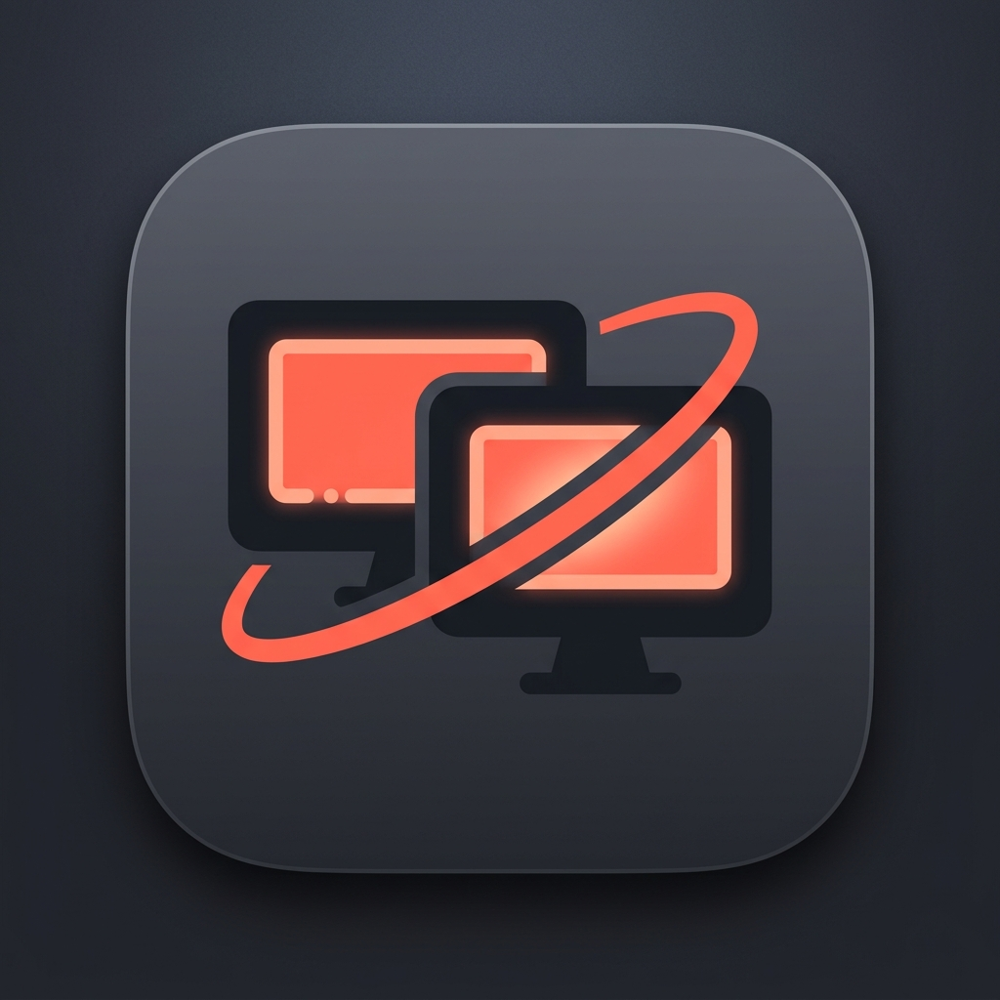

EclipticRD Logo Concepts
🪐 Ecliptic 테마 10선 (신규)
🖥️ 오리지널 10선 (초기)
❮

❯
ECLIPTIC 01 / 10
황도 궤도 아크 & 네온 코어
두 화면 사이를 부드럽게 관통하는 타원형 황도 궤도 링. Concept 01의 안정감에 천체 궤도 동역학을 부여.
Dock 작은 크기 시인성: ★★★★★ (강력 추천)
키보드 좌우 방향키(←, →)로도 슬라이드를 넘길 수 있습니다.